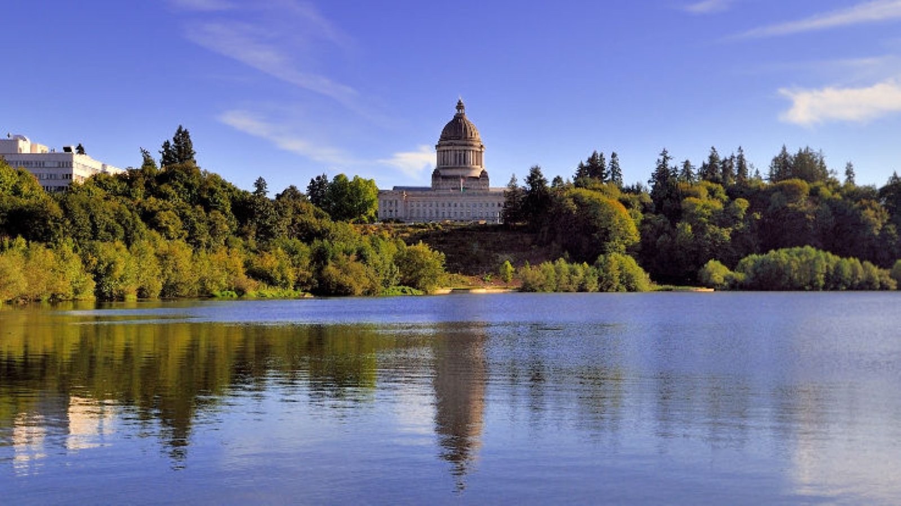

Olympia is the state capitol of Washington. Olympia is located at the southern tip of the Puget Sound. Olympia is well-known for its vibrant art and culture.
Welcome to Olympia, the Capitol of Washington!
Facts about Olympia
- Olympia is located in Western Washington at the southern tip of the Puget Sound
- The population is just over 55 thousand
- Olympia was established in 1859
- Olympia is a Urban Environment
- The average household income is $81,659, this is a little over the state average of $81,245
Fun things to do in Olympia
- Visit the Olympia Farmers Market
- Fish During the Salmon Run
- Go Hiking
- Explore Budd Bay
- Visit Many locally Owned Shops and Restaurants

Photographs of Olympia

Image Obtained From https://stateofwatourism.com/olympia-city-guide/

Image Obtained From https://9to5mac.com/2018/03/06/net-neutrality-washington/

Image Obtained From https://www.experienceolympia.com/hotels/marinas/
Sources
Information obtained from Office of Financial Management.
Information obtained from https://en.wikipedia.org/wiki/History_of_Olympia,_Washington .